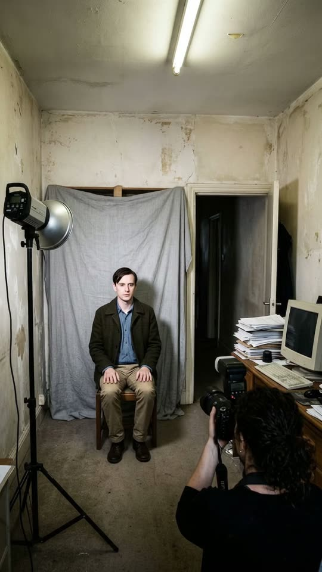
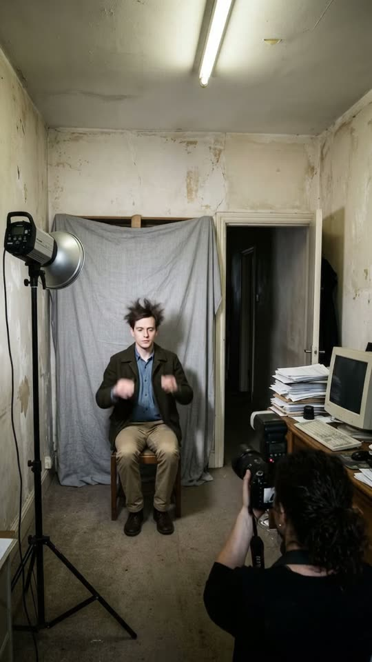
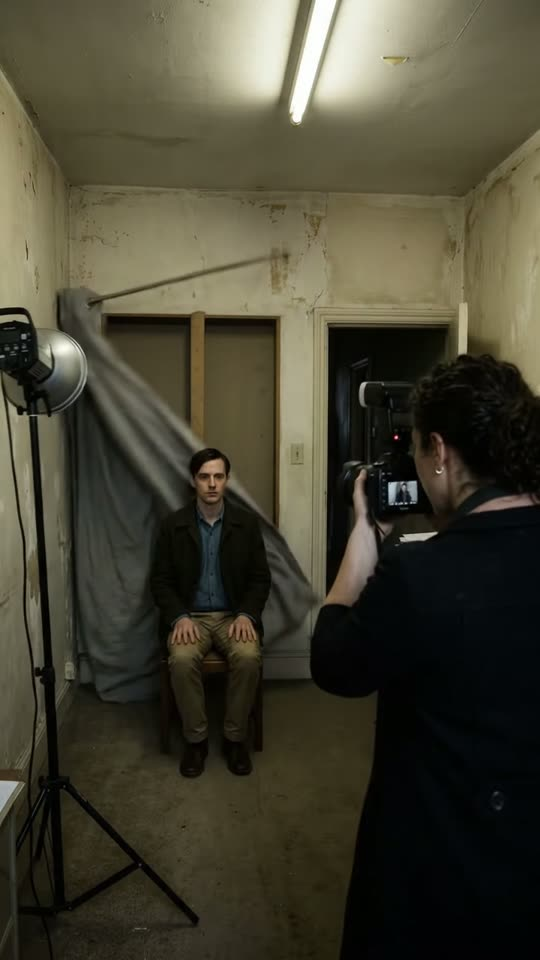

Free prompt pack
One chair.Three flashes.
A deadpan portrait shoot where every flash hits harder than the last: first his hair, then the curtain, then the whole room. One still image and one prompt, in one take.
Both prompts, in the order I ran them. Shake each one to develop it. Tap the wall to fire the flash.
The first frame
Everything that breaks is already in it. This image is frame one: the man on his chair, the grey curtain, the studio light, the stack of papers and the doorway, with the photographer's flash already raised.
Watch out
If the curtain, the light stand or the papers aren't in your image, the video invents them halfway through, or skips the gag.

The prompt 149 words
Real behind-the-scenes photo of a portrait shoot in a cramped, shabby room with stained off-white plaster walls and one bare fluorescent tube on the ceiling. At the back, a man in his thirties sits upright on a small wooden chair, hands on his knees: pale skin, short neat dark-brown side-parted hair, clean-shaven, a dark olive-green wool jacket over a blue chambray shirt, khaki trousers. Behind him, a grey linen curtain hangs from a metal rod as a backdrop. On the left, a studio strobe with a silver reflector on a black light stand; on the right, a wooden desk with a beige computer monitor, a keyboard and a tall stack of loose papers, beside an open doorway to a dark corridor. In the right foreground, seen from behind, a woman with shoulder-length dark curly hair and a dark coat raises a black camera with a big flash on top.
Three flashes
Ten seconds, three blasts, one blank face. Add the image as the reference, set 10 s, 9:16, 720p and audio on, and paste the prompt whole.
- 0–2.6 sflash one: the hair, pressed flat
- 2.6–5.6 sflash two: the curtain and the light
- 5.6–6.2 sflash three: the papers and the camera
- 6.2–10 sfrom the doorway, she goes again
Watch out
Ask for two-frame flashes that never turn the picture white. A frame of solid white is exactly where the model cuts to another shot.
Fragments



The prompt 1317 words
FORMAT Real handheld behind-the-scenes video, seen as the finished exported video file: the full picture edge to edge, nothing on top of it. Whatever records the picture is never in frame. One continuous take in real time, no cuts. Vertical frame. The video runs at 24 fps. No frame is repeated. Real time, 1x speed, never slow motion. SCENE A portrait shoot in a cramped, shabby room. A photographer fires her camera flash three times at a man sitting on a chair, and every flash hits like a blast of air, each one stronger than the last: the first blows his hair up into a wild frizz, which he calmly presses flat again; the second rips the curtain off its rod and knocks over the studio light; the third blows the papers off the desk all over the room and shoves the person filming backwards out through the door. The man never reacts. At the end, the photographer steps back into the doorway, raises her camera again and says "One more." The first flash fires in the first half-second. REFERENCE IMAGE Use it for the room, the man, the photographer, their clothes, the curtain, the studio light, the desk, the monitor, the papers, the doorway and the light. Both people match it exactly, zero drift, no smoothing. The action is described below. THE PEOPLE The man: in his thirties, pale skin, short neat dark-brown side-parted hair, clean-shaven, a dark olive-green wool jacket over a blue chambray shirt, khaki trousers, brown shoes; he sits upright on a small wooden chair with his hands on his knees. His face stays blank the whole take: he only blinks after each flash; his feet stay flat on the same spot on the floor and the chair never moves. The photographer: a woman with shoulder-length dark curly hair and a dark coat, seen from behind and from the side, holding a black camera with a big flash head on top up to her face. THE FLASH Each shot is a two-frame burst of hard white light from the flash head on her camera, with a sharp pop. At the same instant a blast of air bursts out of it, like the shockwave of a small explosion, stronger each time. The room stays visible through every burst: the flash blows out the highlights for two frames but never turns the picture solid white. LOCATION MAP A small room about 4 m deep and 3 m wide. Back wall: the grey linen curtain hanging from a metal rod, and the man on his chair in front of it, 4 m from the camera. Frame-left: a studio strobe with a silver reflector on a black light stand, 1 m from the left wall. Frame-right: a wooden desk against the right wall with a beige old computer monitor, a keyboard and a tall stack of loose papers; behind it, at the back right, an open doorway to a dark corridor. Ceiling: one bare fluorescent tube. The camera starts just inside the entrance doorway in the near wall, at chest height; behind it is a narrow corridor. The photographer stands 1 m in front of the camera at frame-right. FIRST FRAME The man sits centred at x 40-60%, y 35-75%, hair neat, hands on his knees; the grey curtain behind him; the light stand at frame-left; the desk, the monitor, the stack of papers and the back doorway at frame-right; the photographer in the right foreground at x 60-100%, y 40-100%, her back three-quarters to the camera, the camera with its flash already raised to her face. Instant read: a deadpan portrait shoot about to go wrong. CAMERA Handheld at chest height just behind the photographer's right shoulder, almost still, with a small natural sway. At 5.8 s the third blast shoves it straight backwards 2 m in 0.4 s, out through the entrance doorway into the corridor, with a jolt and a short motion blur; the door frame slides into frame on both sides. Then it steadies and holds, looking through the doorway into the room. It never cuts, never turns away from the room, never zooms, never goes in for a close-up. ACTION TIMING 0–0.4 s — She presses the shutter: at 0.3 s FLASH 1. The blast hits him: his hair blows straight up and out into a wild frizzy mess, and it stays like that. 0.4–2.6 s — He blinks, lifts both hands and calmly presses his hair flat with his palms on the top of his head, then puts his hands back on his knees: neat again. She checks the screen on the back of her camera and turns a dial on the flash. 2.6–3.0 s — She raises the camera again: at 2.9 s FLASH 2, bigger, with a boom. The grey curtain rips off its rod and flies to frame-left against the wall; the studio light stand tips over and crashes to the floor. He does not move; his hair stays neat. 3.0–5.6 s — The curtain slides down the wall into a heap on the floor; the rod swings. He sits upright and blinks once. She turns the dial on the flash all the way and raises the camera. 5.6–6.2 s — At 5.8 s FLASH 3, the biggest, with a deep thump: the stack of papers bursts off the desk into hundreds of sheets flying all over the room, plaster dust puffs off the walls, and the camera is shoved backwards out through the doorway into the corridor. 6.2–10 s — From the corridor, through the doorway: the sheets flutter down through the room; the man still sits on his chair, untouched, hands on his knees, hair neat; the photographer steps back into the doorway at frame-right, raises the camera to her face again and says "One more." Hold to the last frame. PHYSICS AND SCALE Real weight: the curtain is heavy cloth that flaps, wraps against the wall and slides down; the light stand falls with gravity and bounces once on the floor; the paper sheets tumble and flutter down at real speed, never hovering. Each blast pushes away from the camera's flash in every direction, but the man and his chair never move. Nothing morphs: one man, one photographer, one curtain, one light stand, one stack of papers. NO FULL-FRAME EVENTS No moment where the picture is one flat colour: the flashes last two frames and the room stays visible through them; the dust never fills the frame; the man stays visible in every frame of the take. LIGHTING The cold, flat light of the fluorescent tube on the ceiling, dim and greenish-white; the three hard white bursts of the flash; the dark corridor outside the doorways. No other light. AUDIO No music, no score, no narration, no subtitles. The hum of the fluorescent tube; each flash a sharp pop followed by the whine of the flash recharging; the first with a whoosh of air, the second with a boom, the rattle of the curtain rings and the crash of the stand, the third with a deep thump, a storm of rustling paper and the bump of the camera against the door frame. Exactly one spoken line: at 9 s the photographer says, flat and calm, "One more." Nobody else speaks. LOOK Real handheld behind-the-scenes footage, seen as the finished exported file: natural colour, a little warm, soft grain, available light, slightly soft focus, never glossy, no cinematic grade, no lens flare. No camera app interface: no shutter button, no gallery thumbnail, no record button, no icons, no timer, no recording dot, no frame lines. POSITIVE LOCKS The man never moves from his chair and never changes his expression. No captions, no subtitles, no on-screen text, no watermark, no logos, no letters or numbers anywhere, nothing on top of the picture. ONE MAN. THREE FLASHES. ONE ROOM. NO CUTS. NO INTERFACE. NO SLOW MOTION. NO MUSIC.
Rule 01
Escalate, don't repeat
Three blasts, each one bigger: the hair, then the curtain, then the whole room. The same gag three times is a loop; a bigger one is a story.
Rule 02
Write the blank face
Say what he doesn't do: feet flat on the same spot, the chair never moves, he only blinks. Just saying he's calm gets you a flinch.
Rule 03
Keep the flash short
Two frames of light with the room still visible through them. A frame of solid white is a free cut for the model.
That's the whole build
Now go wreckyour own studio.
If yours works, send it over. I read every DM and the good ones end up on the account.
@martiiifons